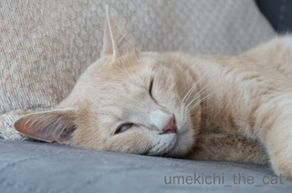

必死な梅吉さん [梅吉]
梅吉さん、行きますよ〜〜、それ〜〜〜〜（放ったのはあの椅子足ソックスです。）
![[猫]](https://blog.ss-blog.jp/_images_e/101.gif) む、とったる
む、とったる
すとん・・・・・・
むう、わしかっこわるいやん。
ほらもいちど行きますよ〜。今度はしっかりキャッチしてくださいよ。
こんどこそとったるっ。
とったで、わしとったで〜〜
ぎゅ〜〜〜〜〜〜
ニャルマジロ〜!!
 ↑ガブッと一押し↑
↑ガブッと一押し↑
すとん・・・・・・
ほらもいちど行きますよ〜。今度はしっかりキャッチしてくださいよ。
えびちゃんの受難 [梅吉]
お持ちの方多いと思います。このけりぐるみ。
我が家では、がぶぐるみ、通称えびちゃん。歯型がすごいです。
不器用な縫合跡も多数。
縫い合わせる度生地がつれてゆくので、えび反り度も増してきましたw
梅吉さんとえびちゃんの一日は・・・
朝。
ガブしすぎて歯が乾燥。お口が閉まらなくなります(^▽^;)
昼。
なんですか、そのお顔はwww
夜。
ぷぷぷっ
ちょっと厚めのコットン生地がお口の水分を奪って歯がくっついてしまうという・・・
がぶがぶの激しさも一因でしょう。
おもちゃとはいえ見ていてえびちゃんが気の毒になります。笑。
夜のお付き合い [梅吉]
梅吉さんのゴハン、おとーさんおかーさんの食事も終わって
それぞれが思い思いの時間を過ごしているひととき・・・
おとーさんが梅吉さんに怪しくせまります。
「ね〜ね〜、梅吉さん〜〜〜、おとーさんと一緒にねんねしませんか〜〜〜」
梅吉さん困惑の表情。爆
おとーさんが望んでいるのはこんなの。
このお気に入りのブランケットでちゅうちゅうします。
ブランケットを見せると寄って来る。まるで闘牛。
梅吉は付き合いが良い方なので大体ちゅうちゅうしますが
たまにはこんなことも。
顔を足蹴にされ、お尻を向けられても、それでもなお満面の笑顔。
梅吉、愛されてます。
換毛期に備えよう！ [梅吉]


窓の向こうには [梅吉]
かくれんぼ上手 [梅吉]
あれ？梅吉さんの姿が見えませんが・・・
おーい、どこー？どこですかー？？
梅吉さーん・・・
でもはようみつけられて“わぁ！びっくりや！！”っていってほしいわ・・・
おーい！！どこー！！！
猫は夜中に大運動会を開催したりすると思いますが、梅吉は夜は人間と一緒にぐっすり。
その分朝、8時頃からお昼頃までテンションMAXです。
爪ドリフトで駆け回り、椅子足ソックスをしばきまくり、さらに垂直跳び、
空のバスタブへダイブ、おかーさんストーキング・・・・
梅吉大活躍です。
なので午後は昼寝、昼寝、昼寝。

結構寝息が大きい(ΦωΦ)
大人になった夏 [梅吉]
昨日はビール缶に穴をあけられました。もちろん梅吉さんに。
sapporoのsの上あたりの穴が梅吉さんのお仕事です。
穴から噴射するビールのしぶきを受けつつ逃げさる梅吉さん。
現場にいたおかーさんはボーゼンとしてしぶきを見つめていました。しくしくしくしく。
濡れタオルでごしごしされた梅吉さん。毛づくろいをはじめましたよ。
あら、梅吉さんきりっとしちゃって。毛づくろいはおわったんですか？
わし、このなつでおとなになったんやろか・・・・
なんかあったかいな・・・ [梅吉]


カフェオレ色の梅吉

梅吉 2023年8月10日 永眠


梅吉と出会った譲渡会

犬猫の理由なき殺処分ゼロ
妄想広告
UMEKICHI 光

爆発的に早い！
時々攻撃的！
Thanks to Mr.Boss365
爆発的に早い！
時々攻撃的！
Thanks to Mr.Boss365